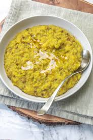

🍚 Khichdi Recipe

Ingredients
- 1 cup rice
- 1/2 cup yellow moong dal (split yellow lentils)
- 1 tbsp ghee or oil
- 1/2 tsp cumin seeds
- 1/2 tsp mustard seeds
- 1/4 tsp turmeric powder
- 1/2 tsp ginger paste
- Salt to taste
- Water as needed (around 4 cups)
- Fresh coriander leaves for garnish
Instructions
- Wash the rice and moong dal together. Drain the water and set aside.
- Heat ghee or oil in a pressure cooker and add cumin seeds, mustard seeds, and ginger paste. Sauté until fragrant.
- Add the washed rice and dal mixture. Stir for a minute.
- Add turmeric powder and salt, followed by 4 cups of water. Stir everything together.
- Close the pressure cooker lid and cook for 2-3 whistles, or until the rice and dal are soft and cooked through.
- Once done, allow the pressure to release naturally. Open the lid and gently stir the khichdi to mix it evenly.
- Garnish with fresh coriander leaves and serve hot.
💡 Tip: You can also add vegetables like carrots, peas, or potatoes to make the khichdi more hearty!